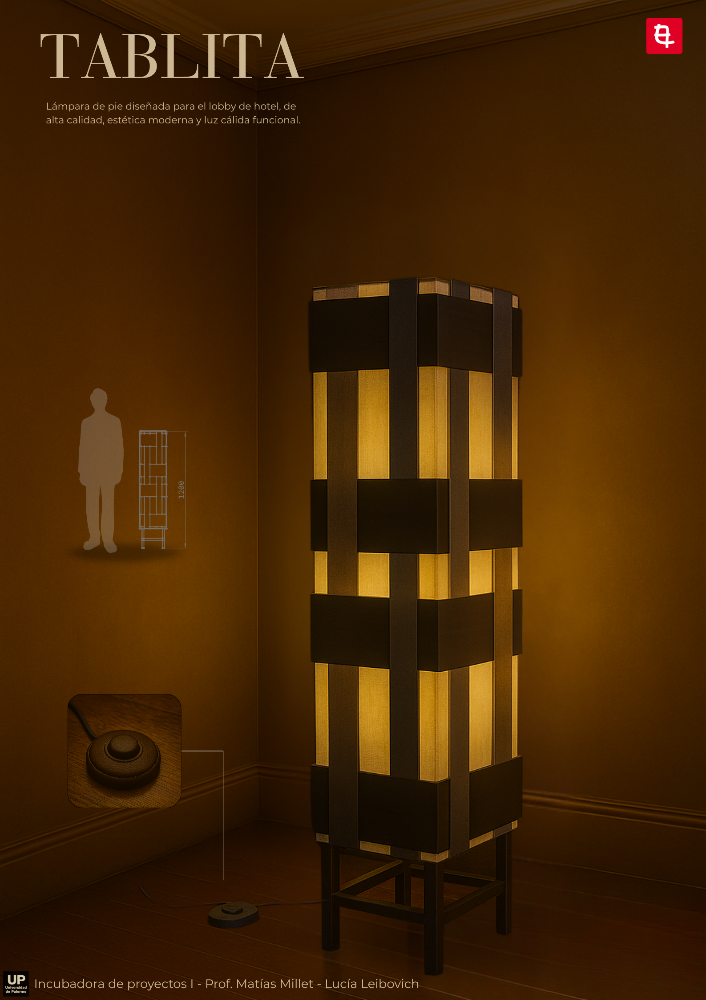
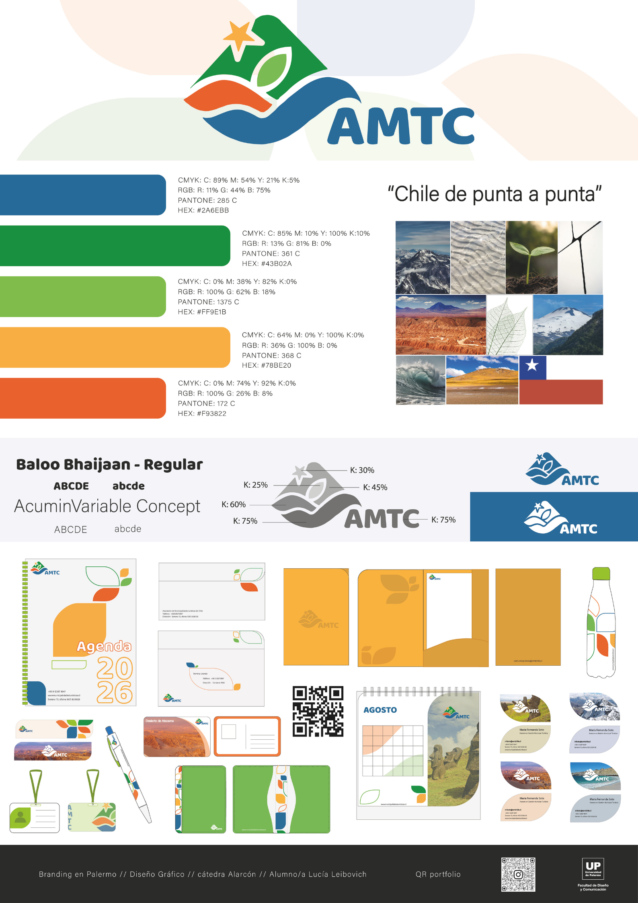
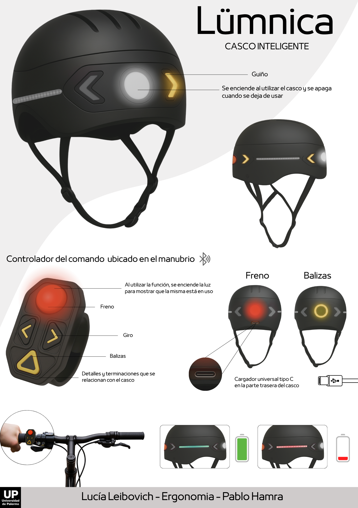
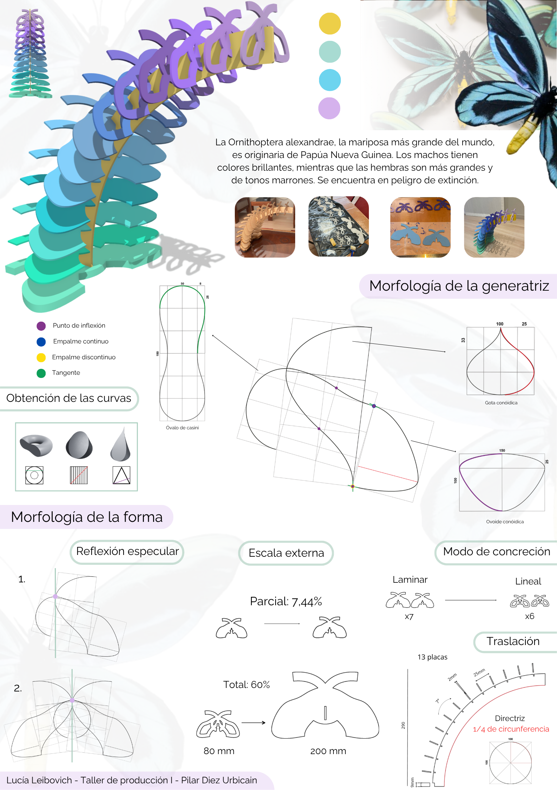
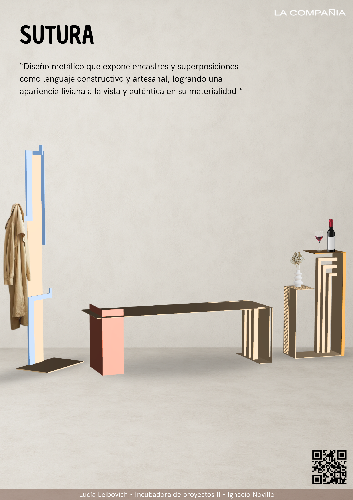
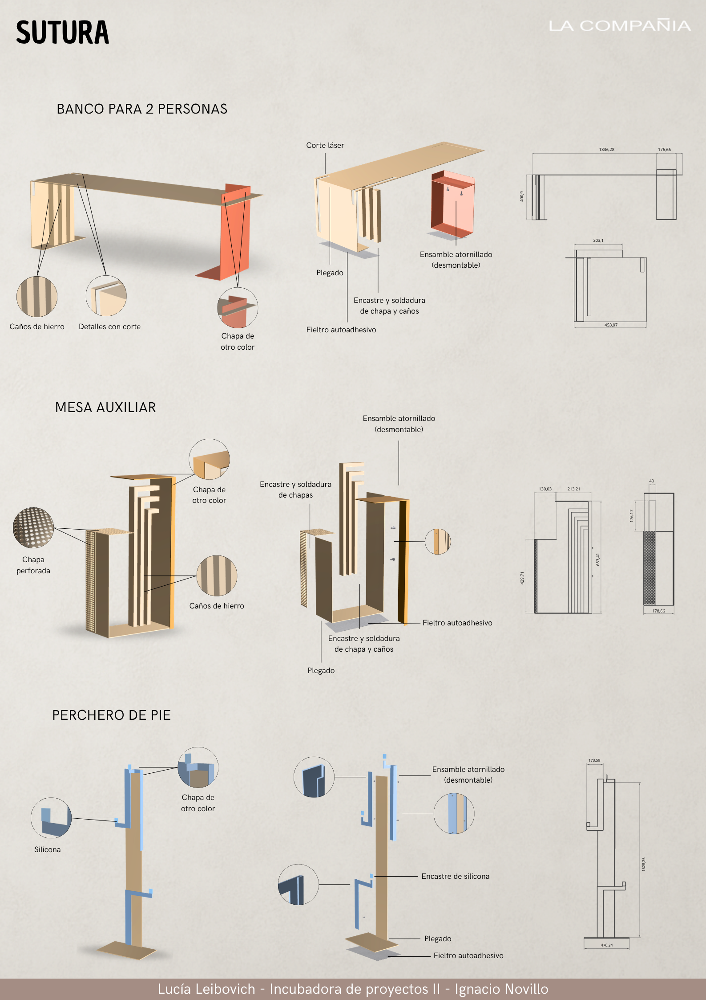
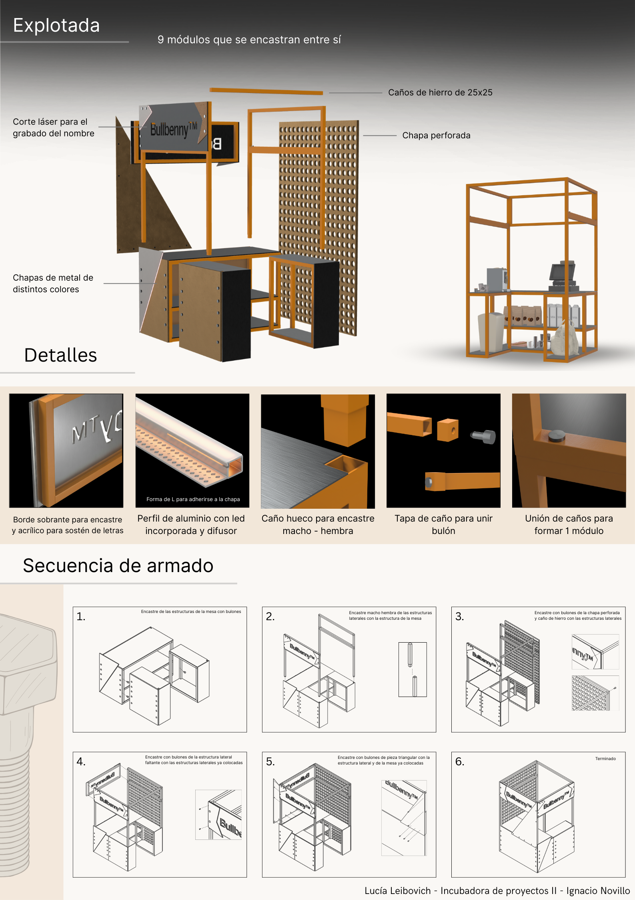
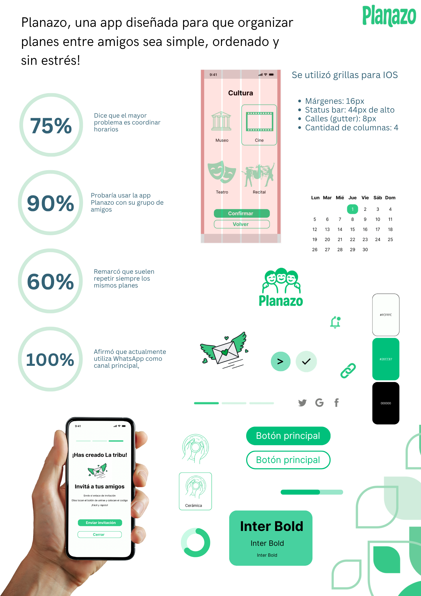
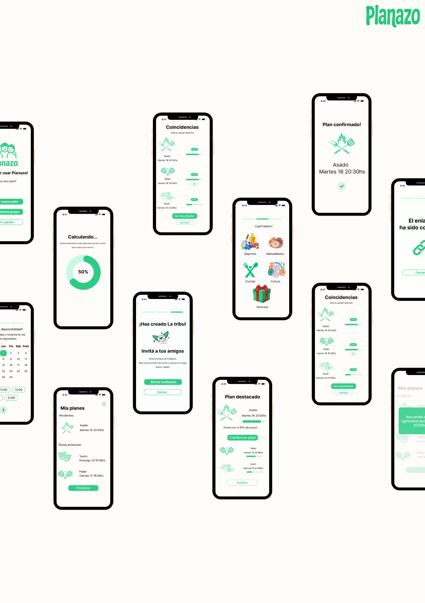

Algunos de mis proyectos
Una selección de trabajos que integran pensamiento sistémico, diseño centrado en el usuario y soluciones visuales de alto impacto. Desde el desarrollo de productos industriales hasta interfaces digitales, cada proyecto es una respuesta a un desafío específico









